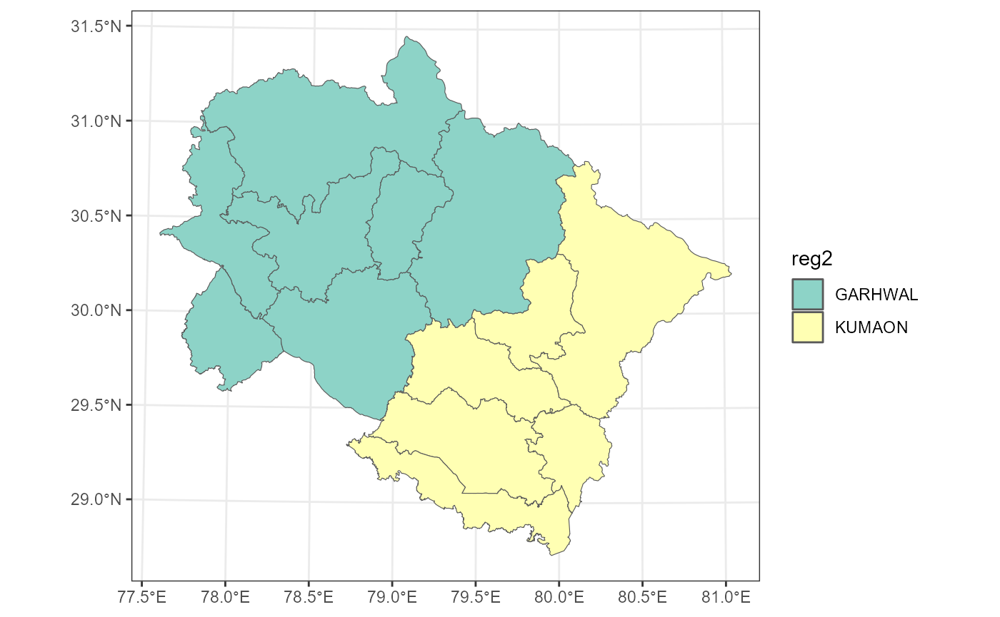
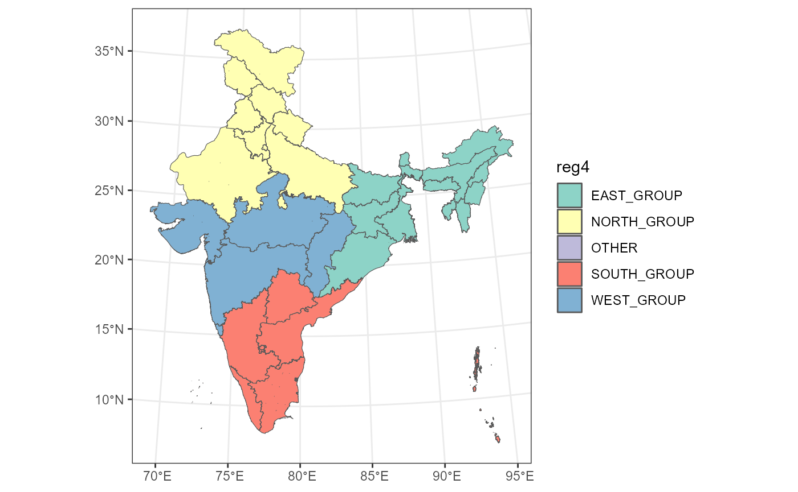

example_transform_regions.RmdIn this example, we will transform the regions within the state of Uttarakhand in India.
groups <- list(
c("ALMORA", "BAGESHWAR", "CHAMPAWAT", "NAINITAL", "PITHORAGARH", "UDHAM SINGH NAGAR"),
c("DEHRADUN", "HARIDWAR", "PAURI GARHWAL", "RUDRAPRAYAG", "TEHRI GARHWAL", "UTTARKASHI", "CHAMOLI")
)
replacements <- c("KUMAON", "GARHWAL")
shapefile_folder <- "C:/Users/Lab 2/Desktop/tools/shapefiles" # Update this path accordingly
UTTARAKHAND_MAP <- get_india_map(shapefile_folder = shapefile_folder, fill = "DISTRICT", location_category = "STATE", location_name = "UTTARAKHAND", action = "get_map_data")
#> Reading layer `DISTRICT_BOUNDARY' from data source
#> `C:\Users\Lab 2\Desktop\tools\shapefiles\DISTRICT_BOUNDARY.shp'
#> using driver `ESRI Shapefile'
#> Simple feature collection with 742 features and 7 fields
#> Geometry type: MULTIPOLYGON
#> Dimension: XY
#> Bounding box: xmin: 2818364 ymin: 2177527 xmax: 5679119 ymax: 5444563
#> Projected CRS: LCC_WGS84
result <- transform_regions(UTTARAKHAND_MAP, existing_column_name = "DISTRICT", groups, replacements, view_transformed_map = TRUE)
# Extract the map and the plot from the result
df <- result$map
view_map <- result$view_map
print(view_map)
In this example, we will transform the regions within the country of India into different groups.
groups <- list(
c("CHANDIGARH", "DELHI", "HARYANA", "HIMACHAL PRADESH", "JAMMU AND KASHMIR", "LADAKH", "PUNJAB", "RAJASTHAN", "UTTARAKHAND", "UTTAR PRADESH"),
c("ANDAMAN & NICOBAR", "ANDHRA PRADESH", "KARNATAKA", "KERALA", "LAKSHADWEEP", "PUDUCHERRY", "TAMIL NADU", "TELANGANA"),
c("BIHAR", "JHARKHAND", "ODISHA", "WEST BENGAL", "ARUNACHAL PRADESH", "ASSAM", "MANIPUR", "MEGHALAYA", "MIZORAM", "NAGALAND", "SIKKIM", "TRIPURA"),
c("DADRA & NAGAR HAVELI & DAMAN & DIU", "GOA", "GUJARAT", "MAHARASHTRA", "MADHYA PRADESH", "CHHATTISGARH")
)
replacements <- c("NORTH_GROUP", "SOUTH_GROUP", "EAST_GROUP", "WEST_GROUP")
INDIA_MAP <- get_india_map(shapefile_folder = shapefile_folder, fill = "STATE", location_category = "COUNTRY", location_name = "INDIA", action = "get_map_data")
#> Reading layer `STATE_BOUNDARY' from data source
#> `C:\Users\Lab 2\Desktop\tools\shapefiles\STATE_BOUNDARY.shp'
#> using driver `ESRI Shapefile'
#> Simple feature collection with 40 features and 4 fields
#> Geometry type: MULTIPOLYGON
#> Dimension: XY
#> Bounding box: xmin: 2818364 ymin: 2177527 xmax: 5679119 ymax: 5444563
#> Projected CRS: LCC_WGS84
# Apply the transformation
result <- transform_regions(INDIA_MAP, existing_column_name = "STATE", groups, replacements, view_transformed_map = TRUE)
# Extract the map and the plot from the result
df <- result$map
view_map <- result$view_map
print(view_map)